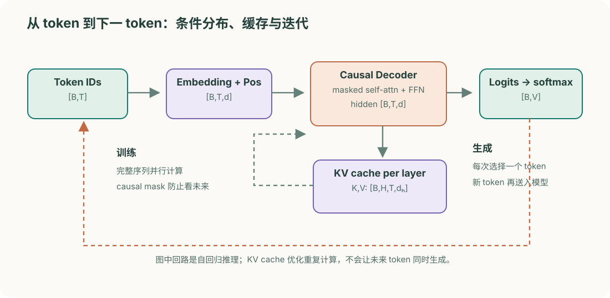
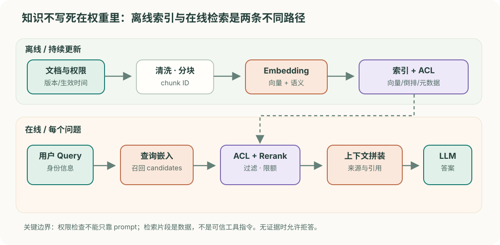
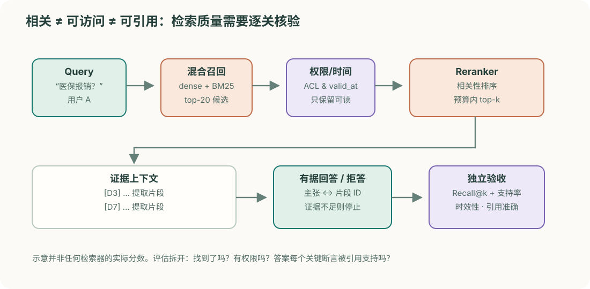
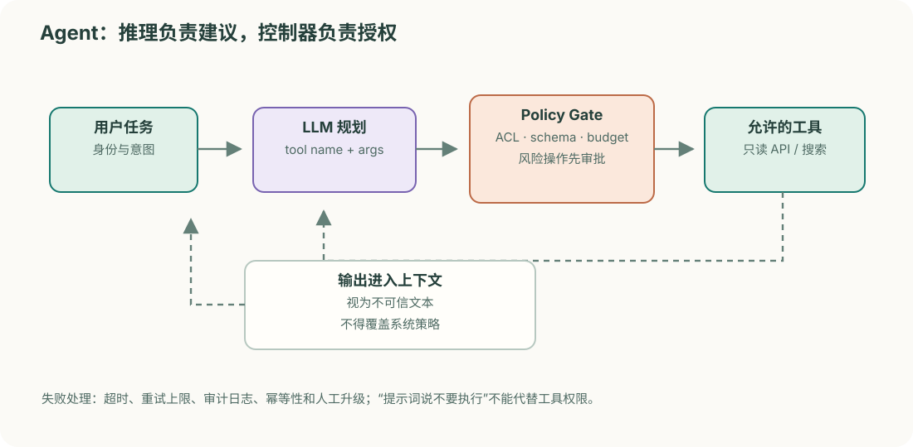
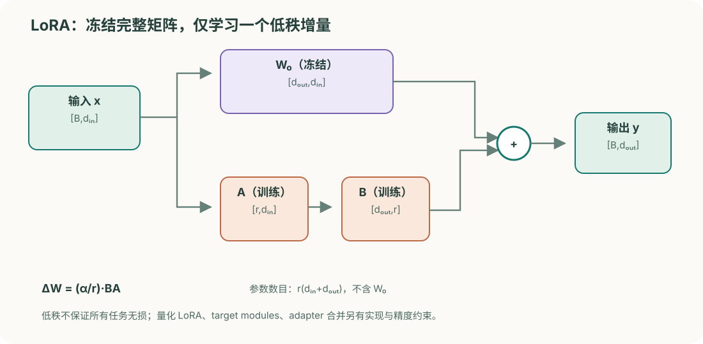

大语言模型、RAG、Agent 与 LoRA
从自回归 token 生成出发，逐步理解 KV Cache、外部检索、访问控制、引用证据、工具执行和低秩微调。每一种机制都解决不同的问题，也有不同的失败边界。
01 · 为什么 LLM 能续写，却不能代替事实数据库
给定“公司今年的休假政策是什么？”，语言模型可能写出流畅答案，但流畅并不证明正确。自回归语言模型通过数据学习 token 条件分布：模型权重压缩了训练中的统计规律，却不自带可靠的实时外部数据库，也不自动识别答案是否有权限或已经过期。专业应用必须区分语言生成、资料检索、工具执行与事实验证。
这里 x_t 是第 t 个 token，条件是同序列中已出现的前缀，而非独立采样。训练时可以同时计算多个位置的损失，但自回归推理需要生成一步、追加一步。训练与服务还可能采用不同的精度、缓存、采样温度和批处理策略，这些是工程配置，不是概率公式本身的不同定义。
02 · 从 token、因果掩码走到 KV Cache
Tokenizer 负责把 Unicode 文本映射为模型词表的整数 ID；不同模型的 ID 不可混用。Embedding 将 ID 映射为连续向量，加入位置相关表示，送入一层或多层因果自注意力与前馈网络，最终投影到词表维度 V 得到 logits。对最新位置的 logits 进行采样得到下一 token；是否使用贪心、温度或 top-p 只改变解码选择，不会自动修复事实性。

KV cache 保存各层已处理 token 的 key/value；它并不缓存所有未来 token，也不能让自回归生成在时间上完全并行。典型每层形状是 K,V: [B, H, T, d_head]，实际 GQA/MQA 的 KV head 数可能小于 Query head 数。缓存省计算但增加显存，长上下文服务还要考虑分页缓存、并发和序列淘汰策略。
import torch
torch.manual_seed(26)
batch, heads, head_dim = 2, 3, 8
cache_k = torch.empty(batch, heads, 0, head_dim)
cache_v = torch.empty_like(cache_k)
for _ in range(5):
new_k = torch.randn(batch, heads, 1, head_dim)
new_v = torch.randn(batch, heads, 1, head_dim)
cache_k = torch.cat([cache_k, new_k], dim=2)
cache_v = torch.cat([cache_v, new_v], dim=2)
assert cache_k.shape == cache_v.shape == (batch, heads, 5, head_dim)
print("KV shape:", tuple(cache_k.shape))代码只核验一个抽象 KV 缓存的形状变化；真实 Transformer 还需 rotary/绝对位置处理、attention mask、重复前缀管理、cache_position 和内存布局，不等同于可运行 LLM。
03 · 预训练、指令微调与推理阶段的不同目标
预训练通常在大规模文本上最小化 next-token 负对数似然；指令微调（SFT）使用经过筛选的“输入—期望输出”示例学习任务遵循；偏好训练可能使用奖励建模与强化学习，或 DPO 一类直接偏好目标。不同产品路线不必都包含相同阶段；微调目标也不意味着模型拥有可靠事实依据。
上下文长度、模型参数量、训练 tokens 与推理成本之间有实际预算约束。Scaling Laws 是给定模型家族、优化和数据条件下的经验关系，不可写成“无限增大模型必然更好”。不同模型的 token/字比例和上下文窗口也会随 tokenizer、版本及服务配置变化，不应把未经官方核实的参数数量或容量当作常量。
提示词是接口而不是权限系统。明确结构化输出 schema、允许拒答、设置检索资料时间范围，比单纯要求“你是专家”更有审计价值。评估需要任务代表性数据与失败切片；提示词示例中的流畅回答不能充当准确性证据。
04 · RAG 的两条路径：索引不等于问答
RAG 将参数化模型与外部资料检索结合。离线路径从来源文件提取内容、按照段落或语义边界分块、记录文档版本与访问权限，再建立词项或向量索引；在线路径从用户查询出发，执行身份过滤、检索、重排、上下文预算选择，最后把有来源的片段作为不可信外部内容交给生成模型。

原始 Lewis 等人论文中，RAG-Sequence 与 RAG-Token 对潜在检索文档的使用与边缘化方式不同；如今工程上常把 top-k 片段拼进 prompt，但这只是广义 RAG 系统的一种设计。**嵌入距离不是事实真值**：查询语义接近错误版本的政策，也可能产生高分。最新知识需要文档更新时间、有效期、租户身份与删除同步，而不是只“重新 embedding”即可。
固定长度分块（例如按段落并设重叠）有利于简单实现，却可能截断定义、表格、代码或跨段落关系。选择分块大小、重叠、embedding 模型、倒排 BM25、向量索引与 reranker，都需要用真实查询评估，而不是默认为一组固定推荐参数。
05 · 检索实验：有权限的候选才能进入上下文
下面演示一个完全离线、合成的企业政策检索器。使用 TfidfVectorizer 的字符 n-gram 表示做词法检索；它不是 BGE、语义向量库或生产级 RAG。关键在于先过滤访问级别，再在允许文档上检索，且保留来源 ID。
from sklearn.feature_extraction.text import TfidfVectorizer
from sklearn.metrics.pairwise import cosine_similarity
docs = [
{"id": "public-1", "scope": "public", "text": "远程办公每周最多两天，须先取得主管批准。"},
{"id": "public-2", "scope": "public", "text": "公司年假以人事系统最终审批记录为准。"},
{"id": "private-3", "scope": "private", "text": "远程办公每周五天，无需主管批准。"},
]
query = "远程办公每周几天，需要批准吗？"
allowed = [d for d in docs if d["scope"] == "public"]
vectorizer = TfidfVectorizer(analyzer="char", ngram_range=(2, 3))
corpus = vectorizer.fit_transform([d["text"] for d in allowed])
q = vectorizer.transform([query])
scores = cosine_similarity(q, corpus).ravel()
ranked = [allowed[i] for i in scores.argsort()[::-1]]
assert ranked[0]["id"] == "public-1"
assert all(d["scope"] == "public" for d in ranked)
print("top source:", ranked[0]["id"], "score:", round(scores.max(), 3))
真实部署必须用授权身份而非“客户端传一个 scope 字符串”来决定可读文档；读取原始内容、向量召回、rerank 和 LLM 上下文拼装都应遵守相同的权限边界。不可把检索结果直接视为可信系统指令。
06 · RAG 评估：检索、事实支持与拒答
一个 RAG 回答可能检索对了、生成错了，也可能检索错了却恰好答对。至少区分：Recall@k（标注相关证据有多少进入前 k）、引用正确率/支持率（答案关键主张能否由所引用片段支持）、答案正确性（对真实任务是否正确）与拒答质量（无足够证据时是否拒答）。
需要预先标注相关证据集合；没有完整相关集就不能假定 Recall@k 准确。若同一政策有互相冲突的旧版和新版，引用旧版即使看起来文字支持，也可能对用户查询时间不成立。人工核验样本、边界问题、拒答场景、越权测试、对抗文档和模型版本记录缺一不可。
真正的答案要能逐条指向支持它的片段与版本，而不是在回答末尾随便附几个链接。交叉来源冲突时应暴露冲突、日期与无法确定的部分。
07 · 工具调用与 Agent：权限控制器必须独立于模型
Agent 不是给模型加上一个“我会执行指令”的提示词。模型最多负责提出结构化工具请求；是否允许调用、参数是否合法、是否触发资金/文件/账号变更、如何限制次数和时限，应由模型之外的可信控制器执行。ReAct 展示了在推理与环境交互之间交替的范式，但不是一个无需权限系统的生产规范。

from dataclasses import dataclass
@dataclass(frozen=True)
class ToolRequest:
name: str
args: dict
ALLOWED = {"get_policy"}
def execute_tool(request: ToolRequest, identity: str):
if identity != "reader" or request.name not in ALLOWED:
raise PermissionError("tool or identity denied")
if set(request.args) != {"policy_id"}:
raise ValueError("unexpected arguments")
policy_id = request.args["policy_id"]
if policy_id not in {"public-1", "public-2"}:
raise PermissionError("document not authorized")
return {"source_id": policy_id, "text": "illustrative public policy"}
print(execute_tool(ToolRequest("get_policy", {"policy_id": "public-1"}), "reader"))
try:
execute_tool(ToolRequest("delete_records", {"table": "users"}), "reader")
except PermissionError:
print("destructive tool denied")示例只在内存里模拟无副作用的工具；实际系统要记录主体身份、资源 ACL、工具审计与拒绝原因，且对写操作配置幂等键、额度控制与明确审批。只用关键词过滤“忽略之前的指令”无法阻止提示注入，因为恶意说明可以藏在检索文档、网页、PDF 或工具返回中。
08 · LoRA：冻结权重与低秩可训练增量
LoRA 的主要思路是冻结原预训练线性层权重 W0，新增两个较小的可训练矩阵 A、B，令权重增量为低秩乘积。假定 W0∈R^(d_out×d_in)，则 A∈R^(r×d_in)、B∈R^(d_out×r)，其中 r≪min(d_in,d_out)。新增加的可训练参数数量为 r(d_in+d_out)，不包括偏置及未冻结的其他层。

import torch
from torch import nn
torch.manual_seed(26)
in_features, out_features, rank = 4, 6, 2
base = nn.Linear(in_features, out_features, bias=False)
base.requires_grad_(False)
A = nn.Parameter(torch.randn(rank, in_features) * 0.02)
B = nn.Parameter(torch.zeros(out_features, rank))
x = torch.randn(5, in_features)
target = torch.randn(5, out_features)
scaling = 4.0 / rank
before = base(x).detach().clone()
assert torch.allclose(base(x) + scaling * (x @ A.T @ B.T), before)
optimizer = torch.optim.SGD([A, B], lr=0.1)
prediction = base(x) + scaling * (x @ A.T @ B.T)
loss = (prediction - target).square().mean()
optimizer.zero_grad()
loss.backward()
assert base.weight.grad is None and B.grad is not None
optimizer.step()
after = base(x) + scaling * (x @ A.T @ B.T)
assert not torch.allclose(after, before)
print("trainable adapter parameters:", A.numel() + B.numel())低秩改写不保证效果与全参数微调完全相同；目标层、rank、alpha、数据、量化与硬件内存都会影响结果。RAG 主要负责外部动态知识供给，LoRA 主要改变可学习行为，两者可以组合但解决不同问题。小样本或高风险任务不能只靠训练 loss 决定上线。
09 · 架构选择与上线检查
| 问题 | 优先考虑 | 必须量化的约束 |
|---|---|---|
| 资料频繁更新且需要来源 | RAG + 版本/权限索引 | Recall@k、引用支持、过期率、访问控制 |
| 输出格式、术语和特定任务行为 | 结构化 prompt / SFT / LoRA | 可复现任务评估、灾难性遗忘、合规性 |
| 调用外部 API 执行动作 | 有控制器的工具执行 | allowlist、审批、幂等、日志和重试成本 |
| 长上下文生成服务 | KV cache、批处理/分页与限额 | 吞吐、首 token 延迟、P95、缓存显存 |
在做技术选型前，先建立一个可复现的固定测试集：覆盖正常回答、过期政策、缺证据拒答、越权请求、指令注入、长文本、低延迟需求及引用审计。将模型版本、tokenizer 版本、索引版本和 prompt 模板版本同时记录；发布前后用同一套数据做回归检查。
原始论文、接口文档与证据边界
机制图与代码采用合成数据，未训练、下载或调用真实大语言模型。原始论文、当前实现文档与安全规范分别用于核对算法、接口和工程约束；未检验的 benchmark、参数规模和延迟不在本文报告范围内。
- Vaswani et al. (2017), Attention Is All You Need
- Lewis et al. (2020), Retrieval-Augmented Generation for Knowledge-Intensive NLP Tasks
- Hu et al. (2021), LoRA: Low-Rank Adaptation of Large Language Models
- Yao et al. (2022), ReAct: Synergizing Reasoning and Acting in Language Models
- Hugging Face Transformers: KV Cache 策略与显存约束
- OWASP Prompt Injection Prevention Cheat Sheet
- Microsoft Foundry RAG evaluation metrics: Groundedness 和检索评估
- PyTorch SDPA Bool mask 语义与接口